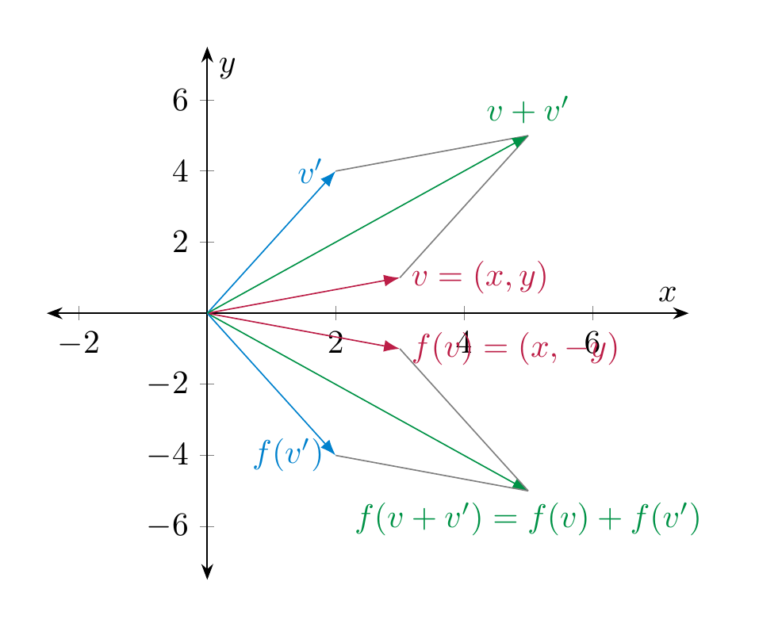
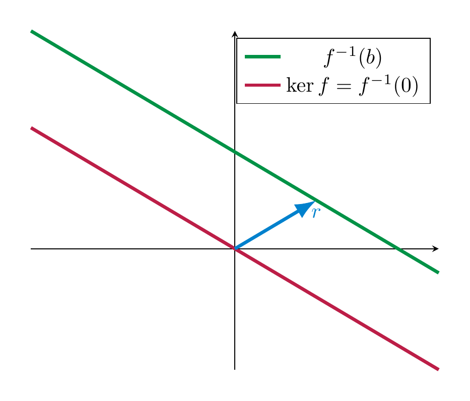
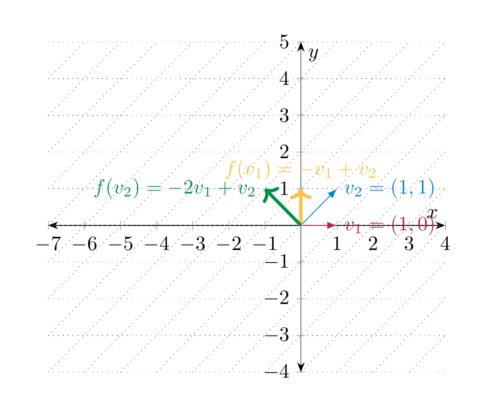
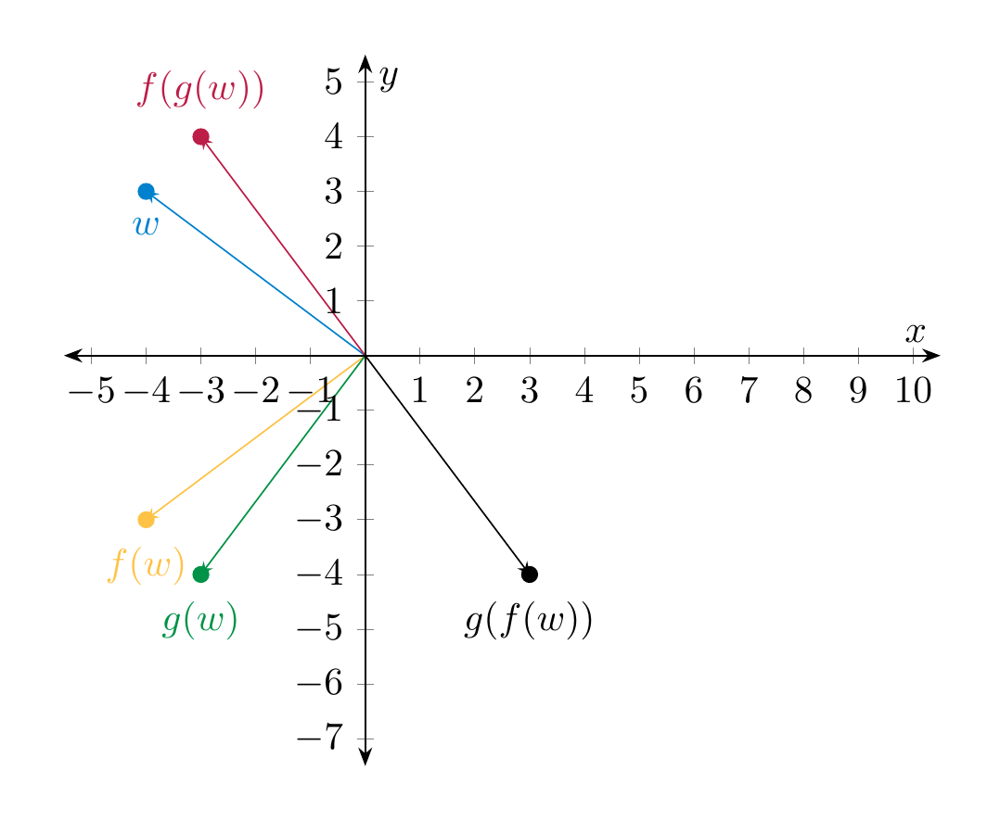

Linear maps¶
Mathematical objects gain a lot of richness when they can be related to each other. In linear algebra, the objects of interest are vector spaces, and the way the relate to each other is by means of linear maps. The word “map” is being used as a synonym to the word “function”.
Definition and first examples¶
Definition 4.1 (Related exercises: Exercise 4.17, Exercise 6.13, Exercise 7.15, Exercise 4.11, Exercise 4.12, Exercise 4.21)
Let \(V, W\) be two vector spaces. A function \(f : V \to W\) is called linear (or a linear map, or a linear transformation) if it satisfies the following conditions:
(4.2)
and
(4.3)
The vector space \(V\) is called the domain of \(f\), \(W\) is called the codomain of \(f\).
Remark 4.4 (Related exercises: Exercise 4.17, Exercise 4.11, Exercise 4.12)
These two conditions can be squeezed into one condition, by requiring that
for all \(a, a' \in {\bf R}\) and all \(v, v' \in V\). This can be paraphrased by saying that \(f\) preserves linear combinations.
Using that \(0 \cdot v = 0_V\) (the zero vector in \(V\)), the above condition implies that
Thus, for a linear map, the zero vector of \(V\) is mapped to the zero vector in \(W\).
Example 4.5
The map \(f : {\bf R}^2 \to {\bf R}^2\), \(f (x,y) := (x, -y)\) (i.e., reflection at the \(x\)-axis) is linear. This can be proven very simply algebraically: for Equation (4.2): if \(v = (x,y)\) and \(v' = (x', y') \in {\bf R}^2\), then
Checking Equation (4.3) is similarly simple. The linearity of the map can also be visualized geometrically:

We will soon regard the preceding example as a special case of the multiplication of a vector with a matrix, namely in this case the matrix \(\left ( \begin{array}{cc} 1 & 0 \\ 0 & -1 \end{array} \right )\), cf. §1.2.
Example 4.6
The map
i.e., the derivative of \(f\), is linear. This is true because we have the formulae (proven in calculus)
Alternatively, one may use that the derivative of a polynomial \(f(x) = \sum_{n=0}^d a_n x^n\) is given by \(f'(x) = \sum_{n=1}^d n a_n x^{n-1}\). Then, for \(g = \sum_{n=0}^d b_n x^n\), we check Equation (4.2), say:
Here are a few slightly more abstract examples of linear maps, in which \(V\) is an arbitrary vector space.
Example 4.7 (Related exercises: Exercise 4.17)
-
The identity map \({\mathrm {id}} := {\mathrm {id}}_V : V \to V\) which is given by \({\mathrm {id}}(v) := v\) is linear.
-
For some other vector spaces \(W\), the zero map \(0 : V \to W\) is the map sending every vector \(v\) to \(0_W\). It is linear.
-
For any real number \(a \in {\bf R}\), the map given by scalar multiplication \(V \to V\), \(v \mapsto a \cdot v\) is linear. This follows from the conditions 4. and 6. in the definition of a vector space (Definition 3.10).
Non-Example 4.8
-
The map \(f : {\bf R} \to {\bf R}\), \(f(x) := x^2\) is not linear. Indeed, \(f(x + y) = (x+y)^2 = x^2 + 2xy + y^2 \ne x^2 + y^2 =f(x) + f(y)\). Also \(f(ax) = a^2 x^2 \ne ax^2 = af(x)\).
-
The map \(f : {\bf R} \to {\bf R}\), \(f(x) := x+1\) is not linear since again
Thus, Equation (4.2) is violated. Also Equation (4.3) is violated: \(f(ax) = ax+1 \ne a(x+1) = af(x)\).
Multiplication of a matrix with a vector¶
In this section, we define the multiplication of a matrix with a vector and show how this gives rise to a linear map. This is an extremely important way to construct linear maps.
Definition 4.9 (Related exercises: Exercise 4.1, Exercise 4.2)
Let \(A = (a_{ij})_{1 \le i \le m, 1 \le j \le n}\) (cf. Notation 2.22) be an \(m \times n\)-matrix and \(v = \left ( \begin{array}{c} v_1 \\ \vdots \\ v_n \end{array} \right )\) be a \(n \times 1\)-matrix, i.e., a row vector with \(n\) columns. The product of \(A\) with \(v\) is the \(m \times 1\)-vector
Thus, the \(i\)-th entry of the (column) vector \(Av\) is computed by traversing the \(i\)-th row of \(A\) and multiplying each entry of that row with the corresponding entry of \(v\).
Example 4.10
Here are two concrete examples:
It makes perfectly good sense to consider matrices whose entries are variables. Compute:
Thus, the equation (of column vectors consisting of 3 rows)
is a very convenient way to write down the linear system
This shows that the product of matrices with column vectors is very useful in enconding linear systems. We record this observation in the due generality:
Observation 4.11
Let
be an \(m \times n\)-matrix and
be a column vector with \(n\) rows and
be a column vector with \(m\) rows. Then the equation
is equivalent to the linear system (in the unknowns \(x_1, \dots, x_n\), consisting of \(m\) equations)
The case of \(2 \times 2\)-matrices¶
The process of multiplying a matrix with a column vector is also geometrically very important. We now investigate this in more detail in the case where
For a column vector \(v = \left ( \begin{array}{c} v_1 \\ v_2 \end{array} \right )\) the product is, according to Definition 4.9,
(4.12)
In keeping with traditional notation from geometry, we will instead write the vector \(v\) as \(\left ( \begin{array}{c} x \\ y \end{array} \right )\), in which case
It is useful to organize this situation into a function, namely the function that sends the vector \(v\) to the vector \(Av\). We obtain a function
Of course, since \(Av\) depends on the entries of \(A\), so does this function \(f\).
Reflections¶
Example 4.13
We consider \(A = \left ( \begin{array}{cc} 1 & 0 \\ 0 & -1 \end{array} \right )\). According to the above we have
We plot a few points \(v\) and the corresponding \(Av\):

Thus, geometrically, \(Av\) is the point \(v\) reflected along the \(x\)-axis.
Rescalings¶
Example 4.14
The matrix \(A = \left ( \begin{array}{cc} \frac 12 & 0 \\ 0 & 1 \end{array} \right )\) describes the map that compresses everything in the \(x\)-direction by the factor \(\frac 12\), and leaves the \(y\)-direction untouched.
Example 4.15
If \(r\), \(s\) are two real numbers,
rescales the \(x\)-direction by a factor \(r\) (so it shrinks for \(r < 1\) and enlarges for \(r > 1\)) and rescales the \(y\)-direction by a factor \(s\).
For \(A = \left ( \begin{array}{cc} \frac 12 & 0 \\ 0 & 2 \end{array} \right )\), this looks as follows:

Shearing¶
Example 4.16
For a fixed real number \(r\), the matrix
sends \(v\) to \(Av = \left ( \begin{array}{c} x+ry \\ y \end{array} \right )\). Thus it is a shearing operation. In the following picture \(A = \left ( \begin{array}{cc} 1 & 2 \\ 0 & 1 \end{array} \right )\).

Rotations¶
We now consider rotations.
Example 4.17 (Related exercises: Exercise 4.1, Exercise 4.2)
For \(A = \left ( \begin{array}{cc} 0 & -1 \\ 1 & 0 \end{array} \right )\), the vector \(Av = \left ( \begin{array}{c} -y \\ x \end{array} \right )\). Geometrically, the function \(v \mapsto Av\) is a counterclockwise rotation by \(90^\circ\).
For \(A = \left ( \begin{array}{cc} -1 & 0 \\ 0 & 1 \end{array} \right )\), the vector \(Av = \left ( \begin{array}{c} -x \\ y \end{array} \right )\) so the function \(v \mapsto Av\) describes a counterclockwise rotation by \(180^\circ\) (or, what is the same, a clockwise rotation by \(180^\circ\)).
For more general rotations, we use basic properties of the trignometric functions, e.g., as recalled in §Chapter B.
Example 4.18 (Related exercises: Exercise 4.1)
In general, for any \(r \in {\bf R}\) the matrix
is such that the function
is a (counter-clockwise) rotation by \(r\). For this reason, \(A\) is called a rotation matrix.
In the following illustration, \(A = \left ( \begin{array}{cc} 0 & -1 \\ 1 & 0 \end{array} \right )\).

We regard a vector \(v = \left ( \begin{array}{c} v_1 \\ \vdots \\ v_n \end{array} \right )\) as an element of \({\bf R}^n\). (Thus, instead of using the notation \((v_1, \dots, v_n)\) for an ordered tuple, as in Definition 3.1, we write the \(n\) numbers underneath in a row.) Fix an \(m \times n\)-matrix \(A\). Then the product \(Av\), which is an column vector with \(m\) entries, is an element in \({\bf R}^m\). We now regard this matrix \(A\) as fixed, and consider the vector \(v\) as a variable. In other words, we consider the function (or map)
Matrix multiplication has the following basic, but crucial property.
Proposition 4.19 (Related exercises: Exercise 4.17, Exercise 4.5, Exercise 4.21, Exercise 4.22)
For any \(m \times n\)-matrix \(A\), the above map is linear.
Proof. We prove this in the case \(m = n = 2\) using . (The case of general \(m\) and \(n\) is just notationally more involved, but otherwise the same.) Let \(v = \left ( \begin{array}{c} v_1 \\ v_2 \end{array} \right )\), \(v' = \left ( \begin{array}{c} v'_1 \\ v'_2 \end{array} \right )\). Then
Likewise, one checks Equation (4.3), i.e., that for \(a \in R\),
◻
Outlook: current research¶
Since matrix multiplication is such a key asset, it is of great interest to perform this process as efficiently as possible. Given two \(2 \times 2\)-matrices \(A\) and \(B\), the computation of \(AB\) by just following the definition takes 8 multiplications, namely
for each of the indices \(i, j, e\) being either 1 or 2. In the 1960’s an algorithm (https://en.wikipedia.org/wiki/Strassen_algorithm) was found that only requires 7 multiplications. By applying that algorithm iteratively for larger matrices, this gives a decidedly better algorithm. Current research is using methods of artificial intelligence to try and come up with similar methods for \(3 \times 3\)- and other matrices. Check out this interesting lay-accessible article on recent trends: https://www.quantamagazine.org/ai-reveals-new-possibilities-in-matrix-multiplication-20221123/!
Kernel and image of a linear map¶
The kernel and the image of a linear map are an important measure how, roughly speaking, interesting this map is. E.g., the zero map \({\bf R}^2 \to {\bf R}^2\), \(\left ( \begin{array}{c} x \\ y \end{array} \right ) \mapsto \left ( \begin{array}{c} 0 \\ 0 \end{array} \right )\) is certainly very boring in the sense that it only produces the zero vector in \({\bf R}^2\). By contrast, say, a rotation (by a fixed angle \(r\)) in \({\bf R}^2\) is more interesting, since any point in \({\bf R}^2\) can be obtained from another point by rotating by that angle \(r\).
In order to introduce kernel and image, we need the following general notions related to maps between sets.
Definition 4.20
Let \(f : X \to Y\) be a function between two sets.
- The preimage of some element \(y \in Y\) is
- The image of \(f\) is defined as
-
\(f\) is called injective (or one-to-one) if for each \(y\), the preimage \(f^{-1}(y)\) contains at most one element.
-
\(f\) is called surjective (or onto) if for each \(y\), \(f^{-1}(y)\) contains at least one element. Equivalently, \(f\) is surjective if \({\operatorname{im}\ } (f) = Y\).
-
\(f\) is called bijective if it is both injective and surjective. In other words, if for each \(y \in Y\), \(f^{-1}(y)\) contains exactly one element.
Example 4.21
While in the applications below, we will often consider \(X\) and \(Y\) to be vector spaces, Definition 4.20 applies to maps between arbitrary sets. For example, consider a group of \(n\) people \(\{P_1, \dots, P_n \}\). Consider the function
that assigns to each person their month of birth. This function is surjective if for each month, one of the persons is born in that month. It is injective, if in each month only one birthday party is happening. It is bijective if both conditions are true, i.e., in every month there is exactly one birthday party (for one of the persons).
In the example above, the map \(m\) can only be bijective if \(n = 12\), i.e., if the size of the two sets is the same. For linear maps (between vector spaces) we want to articulate a similar idea, but simply saying that the size of the vector spaces are the same is insufficient, since \({\bf R}\), \({\bf R}^2\), \({\bf R}^3\) etc. all have infinitely many elements. Rather, we will see in Corollary 4.28 that the dimension of a vector space is the correct notion of size.
Definition 4.22 (Related exercises: Exercise 4.8, Exercise 4.9, Exercise 4.3, Exercise 4.9, Exercise 4.22)
Let \(f : V \to W\) be a linear map. The kernel of \(f\) is defined as
Note that \(\ker (f) \subset V\) and \({\operatorname{im}\ } (f) \subset W\). In fact, these are not just arbitrary subsets:
Proposition 4.23 (Related exercises: Exercise 4.11, Exercise 4.12)
For a linear map \(f: V \to W\), \(\ker f\) is a subspace of \(V\), while \({\operatorname{im}\ } f\) is a subspace of \(W\).
Proof. We only check the conditions in Definition 3.17 for the kernel. (The case of the image is similar.)
-
\(0_V \in \ker f\): this means that \(f(0_V) = 0_W\), which holds by Remark 4.4.
-
For \(v, v' \in \ker f\) we check \(v+v' \in \ker f\): this means \(f(v+v') = 0_W\). Indeed, using that \(f\) is linear we have
- For \(v \in \ker f\) and \(a \in {\bf R}\), we check \(av \in \ker f\): as before, using the linearity of \(f\), we have
◻
Example 4.24
We consider the matrix
and the associated linear map
The kernel of \(f\) consists of vectors \(v\) such that
This tells us that the kernel of \(f\), or equivalently the solutions of this system (in the unknowns \(x, y\) and \(z\)!), is
A basis of \(\ker f\) is given by the two vectors \(\left ( \begin{array}{c} -2 \\ 1 \\ 0 \end{array} \right )\) and \(\left ( \begin{array}{c} 0 \\ 0 \\ 1 \end{array} \right )\).
The image of \(f\) consists of all vectors of the form
with arbitrary \(x, y \in {\bf R}\). (Also, the \(z\) is arbitrary, but it does not show up in \(f\).) This means that \(v_2 = 2 v_1\), and \(v_1\) is an arbitrary real number. Thus
A basis of \({\operatorname{im}\ } f\) is thus given by the vector \(\left ( \begin{array}{c} 1 \\ 2 \end{array} \right )\).
Our goal below is to develop an algorithmic method that determine bases of \(\ker f\), \({\operatorname{im}\ } f\). For now, just observe that in the example above
This is an example of the rank-nullity theorem (Theorem 4.26) below.
Injectivity of linear maps can be measured in terms of the kernel:
Lemma 4.25 (Related exercises: Exercise 4.17)
Let \(f : V \to W\) be a linear map. Then the following are equivalent (i.e., one condition holds if and only if the other holds):
-
\(f\) is injective,
-
\(\ker f = \{0_V\}\).
Proof. Suppose \(f\) is injective, we prove \(\ker f = \{0\}\). Since \(f(0) = 0\) by linearity (Remark 4.4), we have \(0 \in \ker f\). If \(v \in \ker f\), then \(f(v) = 0_W\), so both \(v\) and \(0_V\) are in the preimage of \(0_W\). By the injectivity of \(f\), this forces \(v = 0\).
Conversely, suppose \(\ker f = 0\). Suppose two vectors \(v, v' \in V\) are in the preimage of some \(w \in W\), i.e., \(f(v) = f(v') = w\). Then, by linearity of \(f\)
Thus, \(v-v' \in \ker f\), which means by assumption that \(v-v'=0\). That is: \(v = v'\). Therefore \(f\) is injective. ◻
Theorem 4.26 (Related exercises: Exercise 4.44, Exercise 4.10, Exercise 4.13, Exercise 4.16, Exercise 4.17, Exercise 4.3)
(Rank-nullity theorem) Let \(f: V \to W\) be a map between (finite-dimensional) vector spaces. Then
The rank of \(f\) is defined to be
while the nullity of \(f\) is defined to be \(\dim (\ker f)\).
A proof of this theorem appears in any linear algebra textbook, e.g. . As a remark on the proof, we note that one can prove the following fact, which is very useful in its own right.
Theorem 4.27
Let \(f: V \to W\) be a linear map. Let
be a basis of \(V\) such that
is a basis of \(\ker f\). Then \(f(v_{r+1}), \dots, f(v_n)\) is a basis of \({\operatorname{im}\ } f\).
The following facts are immediate consequences of the rank-nullity theorem.
Corollary 4.28 (Related exercises: Exercise 4.18)
Let \(f : V \to W\) be a linear map between finite-dimensional vector spaces.
-
If \(f\) is injective then \(\dim V \le \dim W\) (since then \(\ker f = \{0\}\), i.e., \(\dim \ker f = 0\)).
-
If \(f\) is surjective then \(\dim V \ge \dim W\) (since them \({\operatorname{im}\ } f = W\), so \(\dim {\operatorname{im}\ } f = \dim W\)).
-
If \(f\) is bijective then \(\dim V = \dim W\).
-
The preceding three statements can in general not be reversed: if, say, \(\dim V \le \dim W\), \(f\) need not be injective. For example the zero map \(V \to W\), \(v \mapsto 0\) is never injective if \(V \ne \{ 0\}\).
-
Suppose in addition that \(\dim V = \dim W\). In this case \(f\) is injective precisely if \(f\) is surjective. (If \(f\) is injective, then \(\dim {\operatorname{im}\ } f = \dim V = \dim W\), so that \({\operatorname{im}\ } f = W\) by Theorem 3.683.. Similarly, if \(f\) is surjective, then \(\dim {\operatorname{im}\ } f = \dim W = \dim V\), so \(\dim \ker f = 0\), so that \(\ker f = \{ 0\}\).)
An important case of this theorem is where \(f : {\bf R}^n \to {\bf R}^m\) is the linear map given by multiplication with a fixed \(m \times n\)-matrix \(A\). We call the rank of \(A\), resp. the nullity the rank, resp. nullity of that linear map. The rank is denoted by \({\operatorname {rk}} A\). These are two highly important numbers associated to a matrix, so we want to have a device for computing them. This is based on the following computation: recall from Example 3.59 the standard basis vectors
We will in the sequel write them as column vectors, so \(e_1 = \left ( \begin{array}{c} 1 \\ 0 \\ \vdots \\ 0 \end{array} \right )\) etc. Then we have
(4.29)
In other words, the product \(A e_i\) is precisely the \(i\)-th column of the matrix \(A\)!
Since any vector \(v \in {\bf R}^n\) is a linear combination of the \(e_i\), we have, for appropriate \(b_1, \dots, b_n \in {\bf R}\)
Thus, \(f(v)\) is a linear combination of the columns of \(A\). This proves the following statement:
Proposition 4.30 (Related exercises: Exercise 4.17)
Let \(A\) be an \(m \times n\)-matrix and \(f : {\bf R}^n \to {\bf R}^m\) the linear map given by multiplication with \(A\). We write
i.e., the \(c_i (\in {\bf R}^m)\) is the \(i\)-th column of \(A\). Then
This subspace of \({\bf R}^m\) is also called the column space of \(A\).
Definition 4.31
The row space of \(A\) is the subspace of \({\bf R}^n\) spanned by the rows of the matrix \(A\).
We can compute the rank of \(A\), i.e., \(\dim {\operatorname{im}\ } f\), as follows:
Proposition 4.32 (Related exercises: Exercise 4.10, Exercise 4.13, Exercise 4.16, Exercise 4.3, Exercise 4.4, Exercise 4.7, Exercise 4.14, Exercise 4.18)
Let \(A\) be an \(m \times n\)-matrix. Suppose \(B\) is a (possibly non-reduced) row-echelon matrix obtained from \(A\) by means of elementary row operations (Definition 2.28).
-
Then the non-zero rows of \(B\) form a basis of the row space of \(A\).
-
If the leading ones of \(B\) lie in the columns \(j_1, \dots, j_r\), then these columns of \(A\) form a basis of the column space of \(A\).
-
The following numbers are all the same: a) \({\operatorname {rk}} A\), b) the dimension of the column space, c) the dimension of the row space of \(A\), d) the number of leading ones in \(B\).
-
The nullity of \(A\) equals \(n\) (the number of columns of \(A\)) minus any of the quantities in the previous point.
Proof. Parts 1. and 2. can be proven by showing that the row and column space of \(A\) do not change when one performs an elementary row operation to \(A\). We skip this part of the proof (e.g., see for a proof).
3. follows from the first two: by definition, \({\operatorname {rk}} A = \dim {\operatorname{im}\ } f\) equals, by Proposition 4.30, the dimension of the column space. By the second statement, this is equal to the number of leading ones in \(B\). Since \(B\) is a row-echelon matrix, this is also the number of non-zero rows, i.e., by the first statement, the dimension of the row space.
Finally, 4. is a consequence of the rank-nullity-theorem. ◻
Example 4.33
Consider the matrix
and the linear map
The row space is the subspace of \({\bf R}^4\) spanned by the vectors \((1 \ 2 \ 2 \ -1)\) etc., while the column space is the subspace of \({\bf R}^3\) spanned by the vectors \(\left ( \begin{array}{c} 1 \\ 3 \\ 1 \end{array} \right )\) etc. We compute a basis of these two spaces as follows:
Thus, the vectors \((1, 2, 2, -1)\) and \((0, 0, 1, -3)\) form a basis of the row space. In particular, its dimension is two. The first and third row of \(A\) form a basis of the column space of \(A\), i.e.,
Thus
According to the rank-nullity theorem (Theorem 4.26),
(i.e., the nullity of \(f\) or of \(A\) is 2). In order to determine a basis of \(\ker f\), we denote the coordinates in \({\bf R}^4\) by \(x_1, \dots, x_4\). Then, according to Gaussian elimination, the variables \(x_2\) and \(x_4\) are free variables, and \(x_3 = 3 x_4\) from the second row above, and then \(x_1 = -2x_2 - 2x_3 + x_4 = -2x_2 -5x_4\). Thus a basis of \(\ker f\) is given by the vectors
This reconfirms that \(\dim \ker f = 2\).
Remark 4.34
Even though the dimension of the row space and the column space are the same, these vector spaces themselves are not the same. In fact, they are not even comparable, given that the row space is a subspace of \({\bf R}^n\), while the column space is a subspace of \({\bf R}^m\).
Here is another consequence of the rank-nullity theorem.
Theorem 4.35
(stated above in Theorem 3.74) Suppose \(A, B \subset V\) are two subspaces of a vector space. Then
Proof. The map
is linear. Since for every \(b \in B\) also \(b' := -b\) is contained in \(B\), the image of this map is \(A + B\). The kernel of \(f\) consists of those vectors \((a,b) \in A \oplus B\) such that \(a - b = 0\), i.e., \(a = b\). This means that \(a \in A \cap B\). Therefore, the rank nullity theorem and Example 3.64 tell us
◻
Revisiting linear systems¶
In this section, we apply our findings from above to the problem of solving a linear system
Throughout, let \(A = (a_{ij})\) be the \(m \times n\)-matrix formed by the coefficients of that linear system. Recall that the vector
is called the vector of constants. We will also consider the linear map (Proposition 4.19)
Theorem 4.36 (Related exercises: Exercise 4.9, Exercise 4.14)
-
Suppose momentarily that \(b_1 = \dots = b_m = 0\), so the above system is homogeneous. In this case the solution set equals \(\ker f\), which in particular is a subspace of \({\bf R}^n\).
-
For arbitrary \(b\), the system above has (at least) one solution if the vector \(b\) lies in the image of \(f\). (Note that the vector is \({\bf R}^m\), and \({\operatorname{im}\ } f \subset {\bf R}^m\).) If \(r = (r_1, \dots, r_n)\) is any such solution, then the solution set consists precisely of the vectors of the form
Proof. Recall from Observation 4.11 that
consists precisely of the solutions of the system above.
Therefore, the first statement is clear: \(\ker f = f^{-1}(0)\) are the solutions of the homogeneous system. Also, the (non-homogeneous) system has a solution precisely if \(f^{-1}(b)\) is non-empty, i.e., if \(b \in {\operatorname{im}\ } f\). For the last statement: we show both implications:
- if \(s = (s_1, \dots, s_n)\) is a solution, then we get
since \(f\) is linear. Since \(r\) is some solution of the system, we have \(f(r) = b\), and also \(f(s) = b\). This implies \(v := s-r \in \ker f\), i.e., \(s = r + v\).
- Conversely, consider a vector of the form \(r + v\), with \(v \in \ker f\). Then
Thus \(r+v\) is also a solution of the system.
◻
Remark 4.37 (Related exercises: Exercise 4.9, Exercise 4.14)
The solution set \(r + \ker f\) of a non-homogeneous system is never a subspace: indeed any subspace contains the zero vector, but if that is a solution we get
Instead, the solution set of the system with a non-zero vector \(b\), i.e., \(f^{-1}(b)\) is a translation of \(\ker f\), as is

Example 4.38
Consider the linear system (in the unknowns \(x, y, z\))
The pertinent \(3 \times 3\)-matrix built out of the coefficients is
As above, we write \(f : {\bf R}^3 \to {\bf R}^3, v = \left ( \begin{array}{c} x \\ y \\ z \end{array} \right ) \mapsto A v\) for the associated linear map.
We compute its rank by bringing it into row-echelon form:
This matrix has 3 leading ones, hence its rank is 3. Thus, \(f\) is surjective. By the rank-nullity theorem we have
Therefore, \(f\) is injective (Lemma 4.25). (Alternatively, we may use Corollary 4.285. directly to see \(f\) is injective.) Thus, \(f\) is bijective. This means that for any vector of constants, such as the above \(\left ( \begin{array}{c} 7 \\ 11 \\ 10 \end{array} \right )\), there is precisely one solution of the linear system. This solution can be determined via Method 2.31, but we will omit this computation here because we will later develop a more comprehensive method, namely by using the inverse \(A^{-1}\), to obtain these solutions.
Linear maps defined on basis vectors¶
An arbitrary map
encodes a lot of information: one needs to specify \(f(v)\) for every \(v \in V\). For linear maps, this simplifies drastically:
Proposition 4.39 (Related exercises: Exercise 4.44, Exercise 6.13, Exercise 4.18)
Let \(v_1, \dots, v_n\) be a basis of a vector space \(V\). Let \(W\) be another vector space and \(w_1, \dots, w_n\) arbitrary vectors (they need not be linearly independent, or span \(W\) etc.) Then there is a unique linear map \(f: V \to W\) such that
(4.40)
Proof. Recall Proposition 3.61: given a basis \(v_1, \dots, v_n\) of a vector space, any vector \(v \in V\) can be uniquely expressed as a linear combination
i.e., we can express \(v\) in such a form and the real numbers \(b_i\) are uniquely determined by \(v\). Moreover, we can think of these numbers \(b_1, \dots, b_n\) as the coordinates of \(v\) (with respect to our coordinate system given by the basis). Namely, given another vector \(v' = \sum_{i=1}^n b'_i v_i\) and some \(a \in {\bf R}\), we have
Now, given \(v \in V\), we define
(4.41)
In particular, for \(v = v_i\), this satisfies \(f(v_i) = w_i\). The map \(f\) is linear; this follows from the preceding discussion.
Conversely, if a linear map \(f\) satisfies \(f(v_i) = w_i\), for \(v\) as above, it necessarily satisfies
So, the map defined in is the only linear map satisfying . ◻
Example 4.42 (Related exercises: Exercise 4.5)
We consider \(V = {\bf R}^3\), with the basis
(Note that \(e_1, e_2\) are part of the standard basis of \({\bf R}^3\).) According to Proposition 4.39, there is a unique linear map \(f: {\bf R}^3 \to {\bf R}^3\) such that
We determine \(f(e_3)\), where \(e_3 = (0,0,1)\) is the third standard basis vector. We have
Thus
Thus, with respect to the standard basis \(e_1, e_2, e_3\) (which is distinct from the one above!), the matrix of \(f\) is given by
That is, \(f\) agrees with the map
Matrices associated to linear maps¶
In Proposition 4.19, we associated a linear map \({\bf R}^n \to {\bf R}^m\) to an \(m \times n\)-matrix. In this section, we will reverse this process: we will begin with a linear map and associate to it a matrix.
Proposition 4.43 (Related exercises: Exercise 4.15, Exercise 4.16, Exercise 4.3, Exercise 4.14, Exercise 4.21)
Let \(V, W\) be two vector spaces with bases \(v_1, \dots, v_n\) and \(w_1, \dots, w_m\), respectively. Let finally \(f: V \to W\) be a linear map. Then there is a unique \(m \times n\)-matrix \(A = (a_{ij})\), called the matrix associated to the linear map \(f\) with respect to the given bases, such that
We denote this matrix by
where for brevity \(\underline v := \{v_1, \dots, v_n\}\) and \(\underline w := \{w_1, \dots, w_m\}\).
For a general vector \(v = \sum_{i=1}^n b_i v_i\), we have
Proof. We apply the above fact (Proposition 3.61) to \(f(v_i) \in W\) (and the basis \(w_1, \dots, w_m\)), and see immediately that a unique expression of \(f(v_i)\) as claimed exists.
We now compute \(f(v)\):
◻
Example 4.44
We continue Example 4.42. The vectors \(w_1 = f(v_1) = (2,-1,0)\), \(w_2 = f(v_2) = (1,-1,1)\) and \(w_3 = f(v_3) = (0,2,2)\) form a basis of \({\bf R}^3\), as one sees by computing the rank of
which is three. We can therefore apply Proposition 4.43 to the bases \(v_1, v_2, v_3\) and \(w_1, w_2, w_3\). The matrix is then
To see this, note for example the second row says
which is true.
If, by contrast, we consider the standard basis \(e_1, e_2, e_3\) of \(V = {\bf R}^3\) (and still \(w_1, w_2, w_3\) in \(W = {\bf R}^3\)), then the matrix reads
For example, the third column of this matrix expresses the identity
which we computed above.
This in particular shows that the matrix \(A\) depends (not only on \(f\) but also on) the choice of the bases of \(V\) and \(W\)!
Example 4.45
We consider the rotation matrix \(A = \left ( \begin{array}{cc} 0 & -1 \\ 1 & 0 \end{array} \right )\), cf. Example 4.17, and consider the associated linear map
We consider the basis \(\underline v\) of \({\bf R}^2\) consisting of \(v_1 = (1, 0)\) and \(v_2 = (1, 1)\). We compute the basis of \(f\) with respect to \(\underline v\) on the domain \({\bf R}^2\), and the standard basis on the codomain \({\bf R}^2\). In order to compute it, we need to express \(v_1\) and \(v_2\) in terms of the standard basis, which is straightforward:
The linearity of \(f\) implies
Thus, the matrix of \(f\) with respect to afore-mentioned bases is
We additionally compute the matrix of \(f\) with respect to the basis \(\underline v\) both on the domain and on the codomain. To this end, we need to express the vectors \(\left ( \begin{array}{c} 0 \\ 1 \end{array} \right )\) and \(\left ( \begin{array}{c} -1 \\ 1 \end{array} \right )\) as linear combinations of \(v_1\) and \(v_2\). We have
Thus, the matrix of \(f\) with respect to the basis \(\underline v\) on both the domain and the codomain is

Composing linear maps and multiplying matrices¶
The following lemma, while simple to prove, is of fundamental importance:
Definition and Lemma 4.46
Let \(f : U \to V\) and \(g: V \to W\) be two linear maps between three vector spaces \(U\), \(V\) and \(W\). Then the composition of \(g\) and \(f\) is the map defined as
This map is again linear.
Proof. We check the two conditions in Definition 4.1: for \(u, u' \in U\) and \(a \in {\bf R}\), we have, using the linearity of \(f\) and \(g\):
◻
Example 4.47
The maps \(f : {\bf R}^2 \to {\bf R}\), \((x, y) \mapsto x\) and \(g : {\bf R} \to {\bf R}^3\), \(x \mapsto (x,0,x)\) are both linear. The composition \(g \circ f\) is the map
We may also consider \(h : {\bf R} \to {\bf R}^2\), \(x \mapsto (x, x)\). Then the composite
The other composite is also defined, it is
(By comparison, the composition \(f \circ g\) is not defined, since \(g\) takes values in \({\bf R}^3\), but \(f\) is defined on \({\bf R}^2\).)
We now relate this composition of abstract maps to something more concrete, the product of matrices.
Definition 4.48 (Related exercises: Exercise 4.22, Exercise 4.26, Exercise 4.20, Exercise 4.24)
If \(A = (a_{ij})\) is a \(m \times n\)-matrix and \(B = (b_{ij})\) is an \(n \times k\)-matrix, then the product \(AB\) (also sometimes denoted by \(A \cdot B\)) is the \(m \times k\)-matrix whose entry in the \(i\)-th row and \(j\)-th column is the following (see §Chapter A for the sum notation \(\sum\)):
In other “words”
I.e., one picks the \(i\)-th row of \(A\) and the \(j\)-th column of \(B\); one traverses these and multiplies the corresponding entries together one by one and finally adds up these products.
Example 4.49
Note that the second product is a \(2 \times 2\)-matrix while the product of the same matrices in the other order is a \(3 \times 3\)-matrix!
The product \(AB\) is only defined if the number of columns of \(A\) is the same as the number of rows of \(B\). For example,
is not defined, i.e., it is a meaningless expression.
Remark 4.50
In the case when \(B\) is a column vector with \(n\) entries, we can regard it as an \(n \times 1\)-matrix. In this case the product \(A B\) defined in Definition 4.48 is an \(m \times 1\)-matrix, which agrees with the column vector \(AB\) as defined in Definition 4.9, so the product considered now is a generalization of that previous construction. In general, if \(B\) is an \(n \times k\)-matrix, we can write it as
where the \(b_1, \dots, b_n\) are the columns of \(B\). Then
In Proposition 4.19, we associated to an \(m \times n\)-matrix \(A\) a linear map
Let us also be given an \(n \times l\)-matrix \(B\), to which we can assign the linear map
Proposition 4.51 (Related exercises: Exercise 4.22)
In the above situation, the compositition \(f \circ g : {\bf R}^l \to {\bf R}^n\) is the map given by multiplication by the matrix \(AB\), i.e., the linear map
Proof. Let us write \(C = AB\) for the product of \(A\) and \(B\). It is an \(m \times l\)-matrix. If we write \(C = (c_{ij})\), we have
(4.52)
We have to compare two linear maps, \({\bf R}^l \to {\bf R}^n\), namely \(f \circ g\) and \(u \mapsto Cu = (AB)u\). According to Proposition 4.39, it suffices to show that these two maps give the same values when we evaluate them on some basis of \({\bf R}^n\), for which we take the standard basis \(e_1, \dots, e_n\). As was noted in , the product \(C e_i\) is precisely the \(i\)-th column of \(C\). That is,
Similarly,
and
Here, as usual, \(e_1, \dots\) denotes the standard basis vectors of \({\bf R}^n\), \({\bf R}^m\) and \({\bf R}^l\). We now compute
◻
With similar arguments, one proves the following:
Proposition 4.53
Let \(f : U \to V\) and \(g : V \to W\) be two linear maps, and let \(u_1, \dots, u_l\), \(v_1, \dots, v_m\) and \(w_1, \dots, w_n\) be bases of these vector spaces. Finally, let \(A\) be the matrix of \(f\) with respect to these bases (of \(U\) and \(V\)) and \(B\) the matrix of \(g\) with respect to these bases (of \(V\) and \(W\)). Then \(BA\) is the matrix of \(g \circ f\) with respect to the bases (of \(U\) and \(W\)).
Properties of matrix multiplication¶
Dependence on the order of factors¶
A key property of matrix multiplication is that the product of two matrices depends on the order of the factors.
Warning 4.54 (Related exercises: Exercise 4.20, Exercise 4.24)
For two \(n \times n\)-matrices \(A\) and \(B\), their product depends on the order of the two matrices. In other words, in general
Mark these words! It is a common misconception among linear algebra-learners to think that \(AB\) would (always) be equal to \(BA\).
Example 4.55
Examples are not hard to come by:
So that
Remark 4.56
The phenomenon \(AB \ne BA\) may be best understood in the light of composition of (linear) maps: if \(f : {\bf R}^n \to {\bf R}^n\) and \(g : {\bf R}^n \to {\bf R}^n\) is another linear map, then in general we have
To take a concrete example, consider the linear map \(f : {\bf R}^2 \to {\bf R}^2\) given by reflecting along the \(x\)-axis, and \(g : {\bf R}^2 \to {\bf R}^2\) the linear map given by rotating counter-clockwise (around the origin) by \(90^\circ\).

Let us conclude this discussion by noting that this issue is not specific to linear algebra, but is a common phenomenon in daily life: there is (often) no reason to expect that doing (the same) two actions in different order give the same result:
-
You first do sports, then take a shower.
-
You first take a shower, then do sports.
In the first scenario you may feel refreshed, in the second one a little sweaty...
Further properties of matrix multiplication¶
Definition 4.57 (Related exercises: Exercise 4.25)
The identity matrix is the square matrix
I.e., it is a square matrix whose entries on the “north-west – south-east” diagonal (which is called the main diagonal) are all 1, and the remaining entries are zero. If it is important to specify the size, one also writes \({\mathrm {id}}_n\).
Example 4.58
If \(n=1\), then \({\mathrm {id}}_1\) is just the \(1 \times 1\)-matrix whose only entry is 1. \({\mathrm {id}}_2 = \left ( \begin{array}{cc} 1 & 0 \\ 0 & 1 \end{array} \right )\).
The first two identities in the next lemma assert that the identity matrix takes the role of the number 1 when it comes to multiplying matrices.
Lemma 4.59 (Related exercises: Exercise 4.41, Exercise 6.10, Exercise 4.25, Exercise 4.20)
Matrix multiplication satisfies the following identities, where \(A\), \(B\) and \(C\) are matrices (of a size such that the products and sums below are defined), and \(r \in {\bf R}\):
Proof. These identities follow from similar identities for the multiplication and addition of real numbers.
To illustrate the principle, we consider the first distributivity law above. Let \(A = (a_{ij})\) be an \(m \times n\)-matrix and \(B, C\) two \(n \times k\)-matrices, \(B = (b_{ij})\) and \(C = (c_{ij})\). Then \(B+C = (b_{ij}+c_{ij})\) so that
At the equality marked ! we have used the distributivity law for real numbers, i.e., the identity \(e(f+g) = ef+eg\) for any \(e, f, g \in {\bf R}\). ◻
Multiplication with elementary matrices¶
We recast the elementary row operations of matrices (Definition 2.28) in terms of multiplication with appropriate matrices. Below, we use the (standard) convention that an “invisible” entry in a matrix is zero, e.g. \({\mathrm {id}}_2 = \left ( \begin{array}{cc} 1 & 0 \\ 0 & 1 \end{array} \right )\) will be written as \(\left ( \begin{array}{cc} 1 & {} \\ {} & 1 \end{array} \right )\) etc.
Proposition 4.60
Let \(A\) be an \(m \times n\)-matrix.
- Let \(A'\) be the matrix obtained by interchanging the \(i\)-th and the \(j\)-th row. Then
(The first matrix is the $m \times m$-matrix obtained from ${\mathrm {id}}_m$ by exchanging the $i$-th and the $j$-th row.)
- Let \(A'\) be the matrix obtained by multiplying the \(i\)-th row with a real number \(r\). Then
(The first matrix is the $m \times m$-matrix obtained from ${\mathrm {id}}_m$ by replacing the $(i,i)$-entry by $r$.)
- Let \(A'\) be the matrix obtained by adding the \(r\)-th multiple of the \(j\)-th row to the \(i\)-th row. Then
(The first matrix is the $m \times m$-matrix obtained from ${\mathrm {id}}_m$ by replacing the $(i,j)$-entry by $r$.)
Definition 4.61 (Related exercises: Exercise 4.20)
The matrices \(E^{(1)}_{i,j}\), \(E^{(2)}_{i,r}\) and \(E^{(3)}_{i,j,r}\) (for any appropriate \(i\), \(j\) and any \(r \in {\bf R}\), where \(r \ne 0\) in \(E^{(2)}_{i,r}\)) appearing in the statement above are called elementary matrices.
Proof. This is a more cumbersome to write down precisely than to convince oneself by unwinding the definition. We check the third statement. If \(B=(b_{ij})\) is the above matrix as stated, we have that \(b_{ii} = 1\) and \(b_{ij} = r\) and all other entries are zero. Let us write \(C = BA\), \(C = (c_{ij})\). Then, by definition,
We compute this sum:
- if \(s \ne i\), then the only \(b_{se}\) that is non-zero is \(b_{ss} = 1\), so that
- For \(s = i\), the only coefficients \(b_{se}\) that are non-zero are \(b_{ss} = 1\) and \(b_{sj} = r\). Thus, the sum above consists of two terms, and therefore
Thus the \(i\)-th row of \(C\) equals the matrix \(A'\) as in the statement above. ◻
Inverses¶
Given a linear map \(f : V \to W\) it is a natural question whether the process of applying \(f\) can be undone. For example, if \(f\) encodes a counter-clockwise rotation in the plane by \(60^\circ\), it can be undone by rotating clockwise by \(60^\circ\). On the other hand, the linear map
cannot be undone, since there is no way of recovering \((x,y)\) only from \(x\).
Definition and Lemma 4.62
Let \(f : V \to W\) be a linear map. Then the following statements are equivalent (i.e., one holds precisely if the other holds):
-
\(f\) is bijective (Definition 4.20),
-
There is a linear map \(g : W \to V\) such that
(By definition of the composition (see also §<a href="../appendix/#sect-notation" data-reference-type="ref" data-reference="sect--notation">Chapter A</a>) this means $g(f(v)) = v$ for all $v \in V$ and $f \circ g = {\mathrm {id}}_{W}$ (i.e., $f(g(w)) = w$ for all $w \in W$.)
If this is the case, we call \(f\) an isomorphism. In this event, the following statements hold:
-
Such a map \(g\) is unique. It is also called the inverse of \(f\) and is denoted by \(f^{-1}: W \to V\).
-
\(\dim V = \dim W\).
Proof. We only prove the direction 1. \(\Rightarrow\) 2.. By assumption \(f\) is bijective, i.e., the preimage \(f^{-1}(w)\) consists of precisely one element, say \(f^{-1}(w) = \{ v \}\). (That is, only for that vector do we have that \(f(v) = w\).) We define a map \(g: W \to V\) by \(g(w) := v\).
To compute \(g(f(v))\) we observe that \(f^{-1}(f(v)) = \{ v\}\), since \(v\) is the only element of \(V\) that is mapped to \(f(v)\). Thus \(g(f(v))=v\).
To compute \(f(g(w))\), say that \(f^{-1}(w) = \{v\}\). This means in particular that \(f(v) = w\). Then \(g(w) = v\) and therefore \(f(g(w)) = w\).
We show that \(g\) is linear. Let \(w, w' \in W\) be given. Let \(v, v' \in V\) be the unique elements such that \(f(v) = w\), \(f(v')=w'\). By definition, this means \(g(w)=v\), \(g(w') = v'\). Then \(w+w' = f(v+v')\), since \(f\) is linear. Thus \(g(w+w')=v+v'=g(w)+g(w')\). In a similar way, one shows \(g(aw)=ag(w)\) for \(a \in {\bf R}\).
If \(g': W \to V\) is another map with \(f(g'(w))=w\), as above, then
Since \(f\) is injective, this implies \(g'(w)=g(w)\). This shows that \(g\) is unique.
The last statement holds by Corollary 4.283.. ◻
Definition and unicity of inverses¶
Definition 4.63
Let \(A\) be an \(n \times n\)-matrix. Another \(n \times n\)-matrix \(B\) is called an inverse of \(A\) if
If such a matrix \(B\) exists, \(A\) is called invertible.
Example 4.64
\(A = \left ( \begin{array}{cc} 0 & 1 \\ 1 & 1 \end{array} \right )\) is invertible, since \(B = \left ( \begin{array}{cc} -1 & 1 \\ 1 & 0 \end{array} \right )\) is an inverse of \(A\):
Not every matrix has an inverse. An \(1 \times 1\)-matrix \(A\), which is just a single real number \(a\) is invertible precisely if \(a \ne 0\). In this case the \(1 \times 1\)-matrix with entry \(\frac 1a\) is an inverse. For larger matrices, it is not enough to be different from zero in order to be invertible, as the following example shows.
Example 4.65
The matrix
is not invertible. We prove this by taking an arbitrary \(2 \times 2\)-matrix \(B = \left ( \begin{array}{cc} a & b \\ c & d \end{array} \right )\) and computing
Thus the condition \(AB = {\mathrm {id}} = \left ( \begin{array}{cc} 1 & 0 \\ 0 & 1 \end{array} \right )\) amounts to four equations:
Indeed, multiplying the first equation by 2 gives \(2a+4c=2\), and inserting the third equation gives a contradiction:
Hence there is no such matrix \(B\), so that \(A\) is not invertible. We can observe that both the two rows of \(A\) are linearly dependent, and also that the two columns of \(A\) are linearly dependent. We will later prove that either of these two conditions are equivalent to \(A\) not being invertible (Corollary 4.93).
Example 4.66
We revisit the reflection, rescaling, rotation and shearing matrices (Example 4.13 onwards) and compute their inverses:
| Geometrical description | Matrix \(A\) | Inverse matrix \(A^{-1}\) |
|---|---|---|
| Reflection at \(x\)-axis | \(\left ( \begin{array}{cc} 1 & 0 \\ 0 & -1 \end{array} \right )\) | \(\left ( \begin{array}{cc} 1 & 0 \\ 0 & -1 \end{array} \right )\) |
| Reflection at \(y\)-axis | \(\left ( \begin{array}{cc} -1 & 0 \\ 0 & 1 \end{array} \right )\) | \(\left ( \begin{array}{cc} -1 & 0 \\ 0 & 1 \end{array} \right )\) |
| Rescaling | \(\left ( \begin{array}{cc} r & 0 \\ 0 & s \end{array} \right )\) | \(\left ( \begin{array}{cc} r^{-1} & 0 \\ 0 & s^{-1} \end{array} \right )\) (if \(r, s \ne 0\); |
| if \(r = 0\) or \(s = 0\) then \(A\) is not invertible) | ||
| Rotation | \(\left ( \begin{array}{cc} \cos r & -\sin r \\ \sin r & \cos r \end{array} \right )\) | \(\left ( \begin{array}{cc} \cos (-r) & -\sin (-r) \\ \sin (-r) & \cos (-r) \end{array} \right ) = \left ( \begin{array}{cc} \cos r & \sin r \\ -\sin r & \cos r \end{array} \right )\) |
| Shearing | \(\left ( \begin{array}{cc} 1 & r \\ 0 & 1 \end{array} \right )\) | \(\left ( \begin{array}{cc} 1 & -r \\ 0 & 1 \end{array} \right )\) (for any \(r \in {\bf R}\)) |
Lemma 4.67
Let \(A\) be an invertible matrix. Then there is precisely one inverse matrix, i.e., if \(B\) and \(C\) are two inverses (which means \(AB=BA={\mathrm {id}}\) and \(AC=CA={\mathrm {id}}\)), then \(B=C\). One therefore speaks of the inverse (as opposed to an inverse), and writes \(A^{-1}\) for the inverse.
Proof. Using the associativity of matrix multiplication (marked !), we get the following chain of equalities
Thus \(B = C\) as claimed. ◻
Linear systems associated to invertible matrices¶
Inverses of matrices are useful to solve linear systems. This is the content of the following theorem:
Theorem 4.68
Let \(A\) be an invertible \(n \times n\)-matrix. We consider the linear system
where \(x = \left ( \begin{array}{c} x_1 \\ \vdots \\ x_n \end{array} \right )\) is a vector consisting of \(n\) unknowns and \(b = \left ( \begin{array}{c} b_1 \\ \vdots \\ b_n \end{array} \right )\) is a vector. This linear system has a unique solution, which is given by
i.e., the product of the inverse of \(A\) with the vector \(b\).
Remark 4.69
By Observation 4.11, if \(A = (a_{ij})\), then the equation \(Ax = b\) is a shorthand for the linear system
Proof. We first check that \(A^{-1}b\) is indeed a solution to the equation \(Ax = b\):
At the equation marked ! we have used the associativity of matrix multiplication (where the third matrix is \(b\), which is just a column vector, i.e., an \(n \times 1\)-matrix).
We now check that \(A^{-1} b\) is the only solution. Suppose then that some vector \(y\) is a solution to the system, i.e., \(A y = b\). We will show \(y = A^{-1} b\) by proving
Again using the properties of matrix multiplication (Lemma 4.59), we have \(A z = A (A^{-1} b - y) = A A^{-1} b - A y = b - b = 0\). Multiplying this with the matrix \(A^{-1}\), we obtain our claim:
◻
Structural properties of taking the inverse¶
Below, it is necessary to have a few properties of the operation “take the inverse of an (invertible) matrix” at our disposal. In the following theorem, all matrices are square matrices of the same size. In the right column, we illustrate what they mean for \(1 \times 1\)-matrices, as a means to remember them. Recall that a \(1 \times 1\)-matrix \((a)\) is invertible if and only if \(a \ne 0\), and its inverse \((a)^{-1}\) is the matrix \((a^{-1})\). (Here, as usual, the reciprocal \(a^{-1}\) of a non-zero real number \(a\) is defined as \(a^{-1} := \frac 1 a\).)
Theorem 4.70
The following holds:
| Statement for general (square) matrices | For \(1 \times 1\)-matrices |
|---|---|
| \({\mathrm {id}}\) is invertible: \({\mathrm {id}}^{-1} = {\mathrm {id}}\) | \(\frac 1 1 = 1\) |
| If \(A\) is invertible, then \(A^{-1}\) is also invertible: |
(4.71)
| \(\frac 1 {\frac 1 a} = a\) | | If \(A\) and \(B\) are invertible, then \(AB\) is invertible:
(4.72)
| \(\frac 1 {ab} = \frac 1 b \frac 1 a\). | | If \(A_1, \dots, A_k\) are invertible, then their product \(A_1 A_2 \dots A_k\) is also invertible:
(4.73)
| \(\frac 1 {a_1 \cdot \dots \cdot a_k} = \frac 1 {a_k} \cdot \dots \cdot \frac 1 {a_1}\) |
Proof. We prove to illustrate the technique. We compute
Using the same arguments, one checks \((B^{-1}A^{-1})(AB) = {\mathrm {id}}\). Thus, by Definition 4.63, \(B^{-1}A^{-1}\) is the inverse of \(AB\). ◻
Remark 4.74
Among the above formulas, is the most noteworthy one: note that the order of \(A\) and \(B\) has been changed! (Recall from Warning 4.54 that the order of multiplication is important. Only for \(1 \times 1\)-matrices, i.e., real numbers the order of multiplication is irrelevant, so that \(\frac 1 {ab} = \frac 1 b \frac 1 a = \frac 1 a \frac 1 b\) etc.)
Invertible matrices and elementary operations¶
Lemma 4.75
Any elementary matrix (Definition 4.61) is invertible:
Proof. To illustrate this, we check this for the last one, where for simplicity of notation we just treat the case of \(2 \times 2\)-matrices. I.e., we prove
To do this, we compute the product
Similarly (or, actually, symmetrically)
◻
Lemma 4.76
If \(A\) is an \(m \times n\)-matrix and \(B\) is obtained from \(A\) by means of elementary row operations:
then
for an invertible \(m \times m\)-matrix \(U\). (In particular, if \(A \leadsto {\mathrm {id}}\), then \({\mathrm {id}} = U A\).)
Proof. If \(A \leadsto B\) in a single step, this is a combination of Lemma 4.75 and Proposition 4.60: in this case \(U\) is the elementary, and in particular invertible, matrix corresponding to the elementary operation that has been performed.
In general, say \(A =: A_0 \leadsto A_1 \leadsto A_2 \leadsto \dots \leadsto A_n = B\), then \(A_1 = U_1 A\), \(A_2 = U_2 A_1\) etc., so that
where we have used the associativity of matrix multiplication. Being the product of elementary, and in particular invertible matrices, \(U\) is then also invertible (Theorem 4.70). ◻
We finally prove Theorem 2.18. You can check that there is no vicious circle!
Corollary 4.77
Let
(4.78)
be a linear system. Apply any sequence of elementary row operations to \(A\) and to \(b\), getting a matrix \(A'\) and a vector \(b'\). Then the system
(4.79)
is equivalent to , i.e., the solution sets of the two systems are the same.
Proof. By Lemma 4.76, there is an invertible matrix \(U\) such that \(A' = UA\) and \(b' = Ub\). If \(Ax = b\), then also
Conversely, if \(A'x = b'\), then (crucially using that \(U\) is invertible)
◻
Invertibility criteria¶
We can now establish a criterion that determines whether a given matrix \(A\) is invertible (and that computes the inverse in case it is). This can then be used in practice to apply Theorem 4.68.
Recall that three statements “X”, “Y”, “Z” are equivalent if any of them implies the others. For example the statements (where \(r\) is a real number)
-
\(r + 1 \ge 1\)
-
\(r \ge 0\)
-
\(r - 4 \ge -4\)
are equivalent. By contrast, the three statements
-
\(r + 1 \ge 1\)
-
\(r \ge 0\)
-
\(r^2 \ge 0\)
are not equivalent, since the third does not imply, say, the second: for \(r = -1\), the third statement holds, but the second does not. A convenient way to show that three statements are equivalent is to show “X” \(\Rightarrow\) “Y”, then “Y” \(\Rightarrow\) “Z”, and then “Z” \(\Rightarrow\) “X”. Of course, this also works similarly for more than three statements.
Theorem 4.80 (Related exercises: Exercise 4.35, Exercise 4.38, Exercise 4.43, Exercise 6.5, Exercise 5.8, Exercise 4.19)
The following conditions on a square matrix \(A \in {\mathrm {Mat}}_{n \times n}\) are equivalent:
-
\(A\) is invertible.
-
For any \(b \in {\bf R}^n\) (regarded as a column vector with \(n\) rows), the equation \(Ax = b\) (for \(x \in {\bf R}^n\) being a column vector consisting of \(n\) unknowns \(x_1, \dots, x_n\)) has exactly one solution.
-
For any \(b \in {\bf R}^n\), the equation \(Ax = b\) has at most one solution.
-
The system \(Ax = 0\) (0 being the zero row vector consisting of \(n\) zeros) has only the trivial solution \(x = 0\) (cf. Remark 2.14).
-
Using the Gaussian algorithm (Method 2.29), \(A\) can be transformed to the identity matrix \({\mathrm {id}}_n\).
-
\(A\) is a product of (appropriate) elementary matrices.
-
There is a matrix \(B \in {\mathrm {Mat}}_{n \times n}\) such that \(AB = {\mathrm {id}}\).
If these conditions are satisfied, the inverse of \(A\) can be computed as follows: write the identity \(n \times n\)-matrix to the right of \(A\) (this gives a \(n \times (2n)\)-matrix):
(The bar in the middle is just there for visual purposes, it has no deeper meaning.) Apply Gaussian elimination in order to bring the matrix \(B\) to reduced row echelon form, which according to the above gives a matrix of the form
Then \(E = A^{-1}\), i.e., \(E\) is the inverse of \(A\).
Proof. 1. \(\Rightarrow\) 2.: This is just the content of Theorem 4.68.
The implications 2. \(\Rightarrow\) 3. and 3. \(\Rightarrow\) 4. are clear.
4. \(\Rightarrow\) 5.: we can bring \(A\) into reduced row-echelon form, say, \(A \leadsto R\). We need to show that \(R = {\mathrm {id}}\). If this is not the case, then \(R\) contains a zero row (since \(R\) is a square matrix). Method 2.31 then tells us that the system \(Rx = 0\) has (at least) one free parameter, and therefore the system has not only the zero vector as a solution. The original system \(Ax = 0\), which by Corollary 4.77 has the same solutions as \(Rx = 0\), then also has a non-trivial solution. This is a contradiction to our assumption that \(R\) is not the identity matrix.
5. \(\Rightarrow\) 6.: by Lemma 4.76, we have \(UA={\mathrm {id}}\) for \(U\) being a product of elementary matrices, say \(U = U_1 \dots U_n\). Then, using , we have
and this is also a product of elementary matrices.
6. \(\Rightarrow\) 7.: if \(A = U_1 \dots U_n\) for some elementary matrices, then
7. \(\Rightarrow\) 1.: suppose \(B\) is such that \(AB={\mathrm {id}}\). We observe that then the only vector \(x \in {\bf R}^n\) such that \(B x = 0\) is the zero vector:
Applying the implication 4. \(\Rightarrow\) 7. (which was already proved) to \(B\), we obtain a matrix \(C\) such that \(BC = {\mathrm {id}}\). Therefore
This means that \(BA = {\mathrm {id}}\).
This finishes the proof that all the given statements are equivalent. The statement about the computation of \(A^{-1}\) holds since the row operations that bring \(A \leadsto {\mathrm {id}}\) also bring the augmented matrix \((A \ | \ {\mathrm {id}})\) to \((UA \ | \ U{\mathrm {id}}) = ({\mathrm {id}} \ | U)\). ◻
Example 4.81 (Related exercises: Exercise 5.8)
We apply this to \(A = \left ( \begin{array}{ccc} 1 & 0 & -1 \\ 3 & 1 & -3 \\ 1 & 2 & -2 \end{array} \right )\):
We subtract the first row 3, resp. 2 times from the other ones, which gives
We subtract 2 times the second row from the third:
We bring the matrix into row echelon form by multiplying the last row with \(-1\), which yields
Finally, to bring it into reduced row-echelon form, we add the third row to the first, which gives
Thus, according to Theorem 4.80, \(A\) is indeed invertible, and its inverse is
Corollary 4.82
If \(A\) is a square matrix such that for some other square matrix \(B\) we have \(AB = {\mathrm {id}}\), then we also have \(BA = {\mathrm {id}}\).
Proof. We use the theorem to see that \(A\) is invertible, and then
And we have seen in above that \(A^{-1} A = {\mathrm {id}}\). ◻
Change of basis¶
Let \(V\) be a vector space with a basis \(v_1, \dots, v_n\). For brevity we write \(\underline v\) for this basis. Recall from Proposition 3.61 that then any vector \(x \in V\) can be written uniquely as
and we regard the coefficients \(\alpha_1, \dots, \alpha_n\) as the coordinates of \(x\) with respect to the basis \(\underline v\). We indicate this notationally by writing \((\alpha_1, \dots, \alpha_n)_{\underline v}\).
If we take, instead, another basis \(\underline w\) consisting of vectors \(w_1, \dots, w_n \in V\) then
giving different coordinates of \(x\) with respect to the basis \(\underline w\). Our goal in this section is to answer the natural question how to pass from the coordinates \((\alpha_1, \dots, \alpha_n)_{\underline v}\) to \((\beta_1, \dots, \beta_n)_{\underline w}\).
Example 4.83
Consider the identity map \({\mathrm {id}}_V : V \to V\) (Example 4.7). We fix a basis \(\underline v = \{v_1, \dots, v_n\}\) of \(V\) and determine the matrix of \({\mathrm {id}}_V\) with respect to this basis both in the domain and in the codomain. We have
These coefficients in \({\mathrm {id}}_V(v_i)\) form the \(i\)-th column of the matrix, which therefore is equal to
Example 4.84
We now consider still the identity map \({\mathrm {id}}_V\), but with a basis \(\underline v = \{v_1, \dots, v_n\}\) on the domain and another basis \(\underline w = \{w_1, \dots, w_n\}\) on the codomain. The matrix of \({\mathrm {id}}_V\) with respect to these bases is found by expressing
i.e., we express \(v_1\) in coordinates with respect to the basis \(\underline w\). More generally, for all \(i \le n\):
The matrix of \({\mathrm {id}}_V\) with respect to the bases \(\underline v\) (domain) and \(\underline w\) (codomain) is then
We refer to this matrix as the base change matrix from \(\underline v\) to \(\underline w\).
Example 4.85
Here is a concrete example of the above situation. Let \(V = {\bf R}^2\), \(\underline v = \{e_1, e_2\} = \{(1,0), (0,1)\}\) be the standard basis and \(\underline w = \{w_1, w_2\} = \{(1,1), (1,3)\}\) be another basis. We compute the matrix following the above lines:
has the solution \(a_{11}=\frac 32\) and \(a_{21} = -\frac 12\).
has the solution \(a_{12} = -\frac 12\), \(a_{22}=\frac 12\), so the matrix reads
Thus, for example, the vector \((3,2) = 3e_1 + 2e_2\) can be expressed as
i.e.,
By Proposition 4.51, the composition of linear maps corresponds to the product of matrices. We apply this to the composition
We choose the following bases on \(V\), indicated by a subscript:
We consider the associated matrices \({\mathrm M}_{{\mathrm {id}}_V, \underline v, \underline w}\) for the first map, and \({\mathrm M}_{{\mathrm {id}}_V, \underline w, \underline v}\) for the second one. We have
In other words,
The above observations lead to the following.
Method 4.86
Let \(f : V \to V\) be a linear map represented by a matrix \(E \in {\mathrm {Mat}}_{n \times n}\) with respect to a fixed basis \(\underline v\) on the domain and codomain. The matrix of \(f\) with respect to another basis \(\underline w\) (again on the domain and the codomain) is
where \(A\) is the matrix describing the change of basis from \(\underline v\) to \(\underline w\), i.e., \(A = {\mathrm M}_{{\mathrm {id}}_V, \underline v, \underline w}\) (cf. Example 4.84).
Proof. Indeed, \(E\) is the matrix for \(V_{\underline v} \xrightarrow{f} V_{\underline v}\), which we indicate by writing
The composition
is again \(f\), but as above we now put a different basis on \(V\):
According to the above, this simplifies to
◻
Example 4.87
Consider the linear map \(f : {\bf R}^2 \to {\bf R}^2\) given in the standard basis \(\underline e = \{e_1, e_2\}\) by multiplication with the matrix \(E = \left ( \begin{array}{cc} 2 & 0 \\ -1 & 3 \end{array} \right )\). We compute the matrix associated to \(f\) with respect to the basis \(\underline w = \{w_1, w_2\} = \{(1,1), (1,-2)\}\) (on the domain and codomain). According to the above, we need to compute the base change matrix \(A = {\mathrm M}_{{\mathrm {id}}, \underline e, \underline w}\) and its inverse \(A^{-1} = {\mathrm M}_{{\mathrm {id}}, \underline w, \underline e}\). The matrix \(A^{-1}\) can be computed more easily than \(A\), because its entries are given by coefficients in the following linear combinations:
Thus \(A^{-1} = \left ( \begin{array}{cc} 1 & 1 \\ 1 & -2 \end{array} \right )\). We compute \(A = (A^{-1})^{-1}\) using the method described in Theorem 4.80:
This leads to
Transposition of matrices¶
Definition 4.88 (Related exercises: Exercise 4.23, Exercise 4.24)
If \(A\) is an \(m \times n\)-matrix, then the transpose (denoted \(A^T\)) is the \(n \times m\)-matrix obtained by \(A\) by reflecting the entries along the main diagonal. More formally, if \(A = (a_{ij})\), then
Example 4.89
For \(A = \left ( \begin{array}{cc} 1 & 2 \\ 3 & 4 \\ 5 & 6 \end{array} \right )\),
The transpose of a column vector is a row vector and vice versa. For example, for \(v = \left ( \begin{array}{c} x \\ y \end{array} \right )\),
We have the following basic computation rules involving the transpose.
Lemma 4.90 (Related exercises: Exercise 4.23)
Let \(A\) be an \(m \times n\)-matrix and \(r \in {\bf R}\) a real number.
-
\((A^T)^T = A\), i.e., the transpose of the transpose equals the original matrix,
-
For another matrix \(B\) of the same size as \(A\), \((A + B)^T = A^T + B^T\).
-
For an \(n \times k\)-matrix \(B\), the transpose of the matrix product \(AB\) is the products of the transposes in the opposite order:
(4.91)
- If a square matrix \(A\) is invertible, then \(A^T\) is also invertible with inverse
(4.92)
Proof. The first two rules are quite immediate to check (and hardly surprising). The first one can also be seen by noting that doing twice the reflection of the entries along the main diagonal gives back the original matrix.
The equation is also directly following from the definitions: let \(A = (a_{ij})\), \(B = (b_{ij})\). Let us write \(C = AB = (c_{ij})\). Then \(c_{ij} = \sum_{e=1}^n a_{ie} b_{ej}\). Thus \(C^T = (c_{ji}) = \sum_{e=1}^n a_{je} b_{ei}\). This equals the \((i,j)\)-entry of \(B^T A^T\).
For , we compute using :
Similarly, again using by :
Thus the product of \(A^T\) and \((A^{-1})^T\) (in the two possible orders) equals \({\mathrm {id}}\), so they are inverse to each other. ◻
The usage of transposes helps us prove another set of equivalent characterizations:
Corollary 4.93 (Related exercises: Exercise 4.14)
Let \(A \in {\mathrm {Mat}}_{n \times n}\) be a square matrix. Then the following are equivalent:
-
\(A\) is invertible.
-
The \(n\) columns of \(A\) are linearly independent.
-
The rank of \(A\) is \(n\).
-
The \(n\) rows of \(A\) are linearly independent.
Proof. 1. \(\Leftrightarrow\) 2.: According to Theorem 4.80, \(A\) is invertible precisely if the only solution to the system \(Ax = 0\) is the zero vector \(x = 0\). Recalling that for \(x = \left ( \begin{array}{c} x_1 \\ \vdots \\ x_n \end{array} \right )\) we have
where \(A = (c_1 \ \dots \ c_n)\) are the columns of \(A\), we see that the above condition is equivalent to the columns being linearly independent.
2. \(\Leftrightarrow\) 3.: The rank is, by definition, the dimension of the column space, i.e., the subspace of \({\bf R}^n\) generated by the columns \(c_1, \dots, c_n\). In order to show that these vectors span \({\bf R}^n\), let \(b \in {\bf R}^n\). By the invertibility of \(A\), we know that the system \(Ax = b\) has a (unique) solution \(x\). Therefore \(Ax = \sum_{k=1}^n x_i c_i = b\).
1. \(\Leftrightarrow\) 4.: \(A\) is invertible if and only if the transpose \(A^T\) is invertible. Now use that the rows of \(A^T\) are the columns of \(A\), and apply the (already proved) equivalence 1. \(\Leftrightarrow\) 2.. ◻
Exercises¶
Exercise 4.1
(See Solution C.4.1.) Determine which \(2 \times 2\)-matrix \(A\) is such that the function
are the following:
-
\(f(v)\) is the point \(v\) reflected along the \(y\)-axis,
-
\(f(v)\) is the same point as \(v\),
-
\(f(v)\) is the origin \((0,0)\),
-
\(f(v)\) is the point \(v\) reflected along the line \(\{(x,x) \ | x \in {\bf R}\}\) (i.e., the “southwest-northeast diagonal”),
-
\(f(v)\) is the point \(v\) rotated counterclockwise, resp. clockwise by \(60^\circ\)?
Exercise 4.2
(See Solution C.4.2.) Determine the matrix \(A\) such that \(Av = \left ( \begin{array}{c} -y \\ x \end{array} \right )\). Describe the behaviour of the function \(v \mapsto Av\) geometrically.
Exercise 4.3
(See Solution C.4.3.) Write down the matrix \(A\) such that the function \(f : {\bf R}^4 \to {\bf R}^3, v \mapsto Av\) satisfies
Determine \(\ker f\) and \({\operatorname{im}\ } f\) (i.e., determine a basis and their dimension).
Exercise 4.4
(See Solution C.4.4.) Compute the rank of
Exercise 4.5
(See Solution C.4.5.) Consider the linear map \(f : {\bf R}^3 \to {\bf R}^3\) described in Example 4.42. Determine the matrix of \(f\) with respect to the standard basis \(e_1, e_2, e_3\) (both in the “source” \({\bf R}^3\), and also in the “target” \({\bf R}^3\)).
Exercise 4.6
(See Solution C.4.6.) For \(\lambda \in {\bf R}\) consider the subspace of \({\bf R}^3\) defined as
For each \(\lambda \in {\bf R}\), find a basis and the dimension of \(W_\lambda\).
Exercise 4.7
(See Solution C.4.7.) Determine the rank of
for each \(\alpha \in {\bf R}\).
Exercise 4.8
(See Solution C.4.9.) Consider the linear map
-
Determine \(\ker f\).
-
Does the vector \(\left ( \begin{array}{c} 1 \\ 0 \\ 3 \end{array} \right )\) lie in the image of \(f\)?
Exercise 4.9
(See Solution C.4.10.) Consider the linear map
-
Determine \(\ker f\).
-
Determine \(f^{-1}(\left ( \begin{array}{c} 1 \\ -3 \\ -3 \end{array} \right ))\), i.e., find all the vectors \(v \in {\bf R}^4\) such that \(f(v) = \left ( \begin{array}{c} 1 \\ -3 \\ -3 \end{array} \right )\). Is this subset of \({\bf R}^4\) a subspace?
Exercise 4.10
(See Solution C.4.11.) Consider the matrix
Here \(t \in {\bf R}\) is an arbitrary real number.
-
Determine the rank of \(A_t\).
-
Set \(t = -4\). For which \(\alpha \in \bf R\) does the system
have solutions?
- Set again \(t = -4\). Determine the solutions of the system
- Is there any \(t \in {\bf R}\) such that the homogeneous system
has only the trivial solution (i.e., only the zero vector)?
Exercise 4.11
(See Solution C.4.12.) Let \(f : V \to W\) be a linear map. For a subspace \(U \subset V\) we define the image of \(U\) to be
(For example, for \(U = V\), this gives back the image of \(f\) as defined in Definition 4.20).
-
Arguing as in Proposition 4.23, prove that \(f(U)\) is a subspace of \(W\).
-
Prove that \(\dim f(U) \le \dim U\).
Exercise 4.12
(See Solution C.4.13.) Let \(f : V \to W\) be a linear map. For a subspace \(U \subset W\), we define the preimage of \(U\) to be
(For example, if \(U = \{0_W\}\) is the subspace consisting only of the zero vector of \(W\), this gives back the kernel: \(\ker f = f^{-1}(\{0_W\})\).)
Arguing as in Proposition 4.23, prove that \(f^{-1}(U)\) is a subspace of \(V\).
Exercise 4.13
(See Solution C.4.14.) Consider the linear map \(f : {\bf R}^4 \to {\bf R}^4\) given by multiplication with the matrix
Determine \(\ker f\), \({\operatorname{im}\ } f\) and \(\ker f \cap {\operatorname{im}\ } f\).
Exercise 4.14
(See Solution C.4.15.) Consider the linear map
given by
-
Determine the matrix of \(f\) with respect to the standard basis in \({\bf R}^3\) and the standard basis \({\bf R}^2\).
-
Determine \(\ker f\) and \({\operatorname{im}\ } f\).
-
Determine the preimage \(f^{-1}((0,1))\). Write down the linear system whose solution set is this preimage. Is it a subspace of \({\bf R}^3\)?
-
Show that the vectors \(v_1 = (0,1,2)\), \(v_2 = (0,-1,1)\) and \(v_3 = (1,1,1)\) are a basis of \({\bf R}^3\). Determine the matrix of \(f\) with respect to this basis of \({\bf R}^3\) and the standard basis in the codomain \({\bf R}^2\).
Exercise 4.15
(See Solution C.4.16.) Consider the linear map \(f: {\bf R}^3 \to {\bf R}^3\) whose matrix with respect to the standard basis (of both the domain and the codomain \({\bf R}^3\)) is
-
Let \(v_1 = (1,1,0)\). Compute \(v_2 = f(v_1)\) and \(v_3 = f(v_2)\). Show that \(v_1, v_2, v_3\) form a basis of \({\bf R}^3\).
-
Consider \(v_4 = f(v_3)\) and determine \(a_1, a_2, a_3\) such that
- Determine the matrix of \(f\) with respect to the basis \(v_1, v_2, v_3\) (both of the domain and of the codomain \({\bf R}^3\)).
Exercise 4.16
(See Solution C.4.17.) Consider the linear map
-
Write the matrix associated to \(f\) with respect to the standard basis of the domain \({\bf R}^4\) and the standard basis of the codomain \({\bf R}^3\).
-
Determine \(\ker f\) and \({\operatorname{im}\ } f\).
Exercise 4.17
(See Solution C.4.18.) Consider the following functions:
-
Verify which ones are linear.
-
Determine their images.
-
For the linear maps, determine if they are injective or/and surjective.
Exercise 4.18
(See Solution C.4.19.) Consider the vectors in \({\bf R}^4\)
-
Are \(v_1, v_2, v_3\) linearly independent? What is the dimension of the subspace \(U\) of \({\bf R}^4\) that these vectors span?
-
Find a basis of \({\bf R}^4\) that contains at least 2 of these three vectors.
-
Define a map \(f : {\bf R}^4 \to {\bf R}^2\) that satisfies \(f(U) = {\bf R}^2\). Can you define a map \(g : {\bf R}^4 \to {\bf R}^3\) that satisfies \(g(U) = {\bf R}^3\)?
Exercise 4.19
(See Solution C.4.20.) Decide whether
is invertible. If \(A\) is invertible, determine its inverse.
Exercise 4.20
(See Solution C.4.21.) Decide whether \(AB = BA\) holds for the following matrices:
-
\(A = \left ( \begin{array}{cc} 1 & 2 \\ 2 & 1 \end{array} \right )\), \(B = \left ( \begin{array}{cc} 0 & 1 \\ -1 & 1 \end{array} \right )\)
-
\(A = \left ( \begin{array}{cc} 3 & 0 \\ 0 & 4 \end{array} \right )\), \(B = \left ( \begin{array}{cc} -1 & 0 \\ 0 & 2 \end{array} \right )\)
-
\(A = \left ( \begin{array}{cc} 1 & x \\ 0 & 1 \end{array} \right )\), \(B = \left ( \begin{array}{cc} y & 1 \\ 0 & y \end{array} \right )\) for two fixed real numbers \(x\) and \(y\)
-
\(A = \left ( \begin{array}{cc} 3 & 0 \\ 0 & 3 \end{array} \right )\), \(B = \left ( \begin{array}{cc} b_{11} & b_{21} \\ b_{12} & b_{22} \end{array} \right )\) an arbitrary \(2 \times 2\)-matrix
-
\(A\) an arbitrary matrix, \(B = AA\) (the product of \(A\) with itself, this is also denoted \(A^2\))
Exercise 4.21
(See Solution C.4.22.) Determine in each case whether there is a matrix \(A\) satisfying the following condition. If so, is there a unique such matrix or can there be several matrices satisfying the condition? Describe your findings geometrically.
-
\(A \left ( \begin{array}{c} 1 \\ 0 \end{array} \right ) = \left ( \begin{array}{c} 3 \\ 4 \end{array} \right )\) and \(A \left ( \begin{array}{c} 0 \\ 1 \end{array} \right ) = \left ( \begin{array}{c} 4 \\ 5 \end{array} \right )\)
-
\(A \left ( \begin{array}{c} 1 \\ 0 \end{array} \right ) = \left ( \begin{array}{c} 3 \\ 4 \end{array} \right )\) and \(A \left ( \begin{array}{c} 2 \\ 0 \end{array} \right ) = \left ( \begin{array}{c} 6 \\ 8 \end{array} \right )\)
-
\(A \left ( \begin{array}{c} 1 \\ 0 \end{array} \right ) = \left ( \begin{array}{c} 3 \\ 4 \end{array} \right )\) and \(A \left ( \begin{array}{c} 2 \\ 0 \end{array} \right ) = \left ( \begin{array}{c} 3 \\ 4 \end{array} \right )\)
Exercise 4.22
(See Solution C.4.23.) Find two \(2 \times 2\)-matrices \(A, B\) such that
(the zero matrix), but \(A \ne 0\) and \(B \ne 0\). (Hint: start with \(A = B = 0\), and then change very few entries.)
Exercise 4.23
(See Solution C.4.24.) A square matrix \(A\) is called symmetric if
-
Determine \(s, t \in {\bf R}\) such that the matrix \(\left ( \begin{array}{cc} 1 & s \\ -2 & t \end{array} \right )\) is symmetric.
-
Let \(A\) be any square matrix. Prove that \(A + A^T\) is always symmetric. (Hint: Use Lemma 4.90).
Exercise 4.24
(See Solution C.4.25.) The trace of a square matrix \(A = (a_{ij})\) is defined to be the sum of the entries on the main diagonal:
Prove the following statements (if you get stuck with the notation, assume first that \(A = \left ( \begin{array}{cc} a & b \\ c & d \end{array} \right )\) is a \(2 \times 2\)-matrix, then \({{\mathrm {tr}}} (A) = a + d\)):
-
\({{\mathrm {tr}}}(A)={{\mathrm {tr}}}(A^T)\),
-
\({{\mathrm {tr}}}(AB) = {{\mathrm {tr}}}(BA)\) (for another square matrix \(B\) of the same size). This is noteworthy since \(AB \ne BA\) in general!
-
\({{\mathrm {tr}}} (A+B) = {{\mathrm {tr}}}(A) + {{\mathrm {tr}}} (B)\) (for another square matrix \(B\) of the same size), \({{\mathrm {tr}}} (rA) = r {{\mathrm {tr}}}(A)\) (for \(r \in {\bf R}\)).
-
(optional, slightly more challenging) Prove there is no matrix \(B\) such that \(AB-BA = {\mathrm {id}}\).
Exercise 4.25
(See Solution C.4.26.) Let \(A = \left ( \begin{array}{cc} a & b \\ c & d \end{array} \right )\) be an arbitrary \(2 \times 2\)-matrix and \(r \in {\bf R}\). Recall that the scalar multiple \(rA = \left ( \begin{array}{cc} ra & rb \\ rc & rd \end{array} \right )\). Find a \(2 \times 2\)-matrix \(R\) such that the matrix product \(RA\) equals the scalar multiple:
Exercise 4.26
(See Solution C.4.27.)
- Let
be a so-called *strictly upper triangular matrix* (of size $3 \times 3$). Compute $A^2$ and prove that $A^3 = 0$.
- Make a (sensible) similar statement for \(n \times n\)-matrices (cf. Proposition 5.20 for the definition of upper triangular matrices in general).
Exercise 4.27
(See Solution C.4.28.) Consider the identity map
Consider the standard basis \(e_1 = (1,0)\) and \(e_2 = (0,1)\) of the domain, and the basis comprised of \(v_1 = (1,-3)\) and \(v_2 = (2,1)\) on the codomain.
-
Compute the base change matrix of \({\mathrm {id}}\) with respect to these bases.
-
Use it to compute the coordinates of \((2,-5)\) in terms of the basis \(v_1, v_2\).
Exercise 4.28
(See Solution C.4.29.) Consider the identity map
and the basis \(v_1 = (1,0,-1)\), \(v_2 = (2,1,1)\), \(v_3 = (-1,-1,7)\) on the domain and the standard basis on the codomain. Compute the base change matrix with respect to these bases.
Find the base change matrix from the standard basis \(e_1, e_2, e_3\) in \({\bf R}^3\) to the basis \(v_1 = (1,1,2)\), \(v_2 =(1,1,3)\), \(v_3 = (7,-1,0)\).
Exercise 4.30
(See Solution C.4.30.) Consider the linear map
where \(A = \left ( \begin{array}{cc} 2 & 1 \\ 0 & 1 \\ -3 & 1 \end{array} \right )\). Compute the matrix \(B\) of \(f\) with respect to the basis \(\underline v = \{v_1=(1,-1), v_2=(3,-1)\}\) in \({\bf R}^2\), and the basis \(\underline t = \{t_1=(1,0,1), t_2 = (2,1,1), t_3=(-1,-1,-1)\}\) in \({\bf R}^3\).
Hint: We may consider the following diagram:
Here the subscripts at \({\bf R}^2\) indicate which basis we consider. The matrices \(H\) and \(K\) are the base change matrices from the basis \(\underline v\) to the standard basis \(\underline e\), resp. from the standard basis \(\underline e\) to the basis \(\underline t\). Then
Consider the linear map
which in the standard basis (on both the domain and the codomain) is given by
Compute the matrix of \(f\) with respect to the basis
(on the domain and the codomain).
Exercise 4.32
(See Solution C.4.31.) Consider the linear map
which is given by the matrix \(A = \left ( \begin{array}{cc} 6 & -1 \\ 2 & 3 \end{array} \right )\) with respect to the standard basis in the domain and the codomain.
Find its matrix with respect to the basis \(v_1 = (1,1)\), \(v_2 = (1,2)\) both in the domain and the codomain.
Exercise 4.33
(See Solution C.4.32.) Let \(A = \left ( \begin{array}{ccc} 0 & 0 & 1 \\ 0 & 1 & 0 \\ 1 & 0 & 0 \end{array} \right )\). Determine the vectors \(x = \left ( \begin{array}{c} x_1 \\ x_2 \\ x_3 \end{array} \right )\) such that
Exercise 4.34
(See Solution C.4.33.) Find, if possible the vectors \(x = \left ( \begin{array}{c} x_1 \\ x_2 \\ x_3 \end{array} \right )\) such that
Exercise 4.35
(See Solution C.4.34.) Consider the matrix \(A = \left ( \begin{array}{cc} 3 & 0 \\ 8 & -1 \end{array} \right )\) which represents \(f: {\bf R}^2 \to {\bf R}^2\) with respect to the standard basis. Find the matrix of \(f\) with respect to the basis
For \(A\) and \(f\) as in Exercise 4.35, consider now the basis
Compute the matrix of \(f\) with respect to that basis.
Exercise 4.37
(See Solution C.4.35.) Let \(f: {\bf R}^3 \to {\bf R}^3\) be the map whose matrix with respect to the standard basis is
Compute the matrix with respect to the basis
Exercise 4.38
(See Solution C.4.36.) Let \(f: {\bf R}^3 \to {\bf R}^3\) be the linear map whose matrix with respect to the standard basis is
- Find a basis of the solution space \(L\) of the linear system
(As a forecast to terminology introduced later, this solution space is the so-called *eigenspace* of $A$ for the *eigenvalue* 3, cf. <a href="../eigenvalues/#dlm-eigenspace" data-reference-type="ref+Label" data-reference="dlm:eigenspace">Definition and Lemma 6.11</a>.)
- Complete the basis of \(L\) (which is a subspace of \({\bf R}^3\)) to a basis of \({\bf R}^3\), and compute the matrix of \(f\) with respect to this basis.
Exercise 4.39
(See Solution C.4.37.) Consider the linear map \(f: {\bf R}^3 \to {\bf R}^3\) whose kernel is \(L((1,0,1))\) and such that
Compute its matrix with respect to the standard basis.
Consider the linear map \(f: {\bf R}^3 \to {\bf R}^3\) such that
- Show that the vectors
form a basis of ${\bf R}^3$. (Note that for each of these three vectors, one has $f(v_i) = \lambda_i v$, with $\lambda_1 = 3$ etc. Therefore, the basis is an example of a so-called *eigenbasis*, cf. <a href="../eigenvalues/#def-eigenbasis" data-reference-type="ref+Label" data-reference="def:eigenbasis">Definition 6.17</a>.)
-
Compute the matrix of \(f\) with respect to that basis.
-
Compute the matrix of \(f\) with respect to the standard basis.
The following two exercises are all concerned with linear systems of the form
where \(A\) is a certain square matrix, \(x\) is a vector and \(\lambda \in {\bf R}\) a real number. We will study these systems systematically in §Chapter 6.
Exercise 4.41
(See Solution C.4.38.) Find the solutions of the linear system
Solve the system
Exercise 4.43
(See Solution C.4.39.) Consider the vectors \(v_1 = (1,0,-1)\), \(v_2 = (1,1,0)\), \(v_3 = (1,0,-2) \in {\bf R}^3\).
Let \(f\colon {\bf R}^3 \to {\bf R}^3\) be the linear map such that \(f(v_1) = (3,0,-5)\), \(f(v_2) = (2,2,0)\) (in the terminology of Definition 6.1, \(v_2\)is an eigenvector with eigenvalue \(2\)) and \(f(v_3) = (5,2,-5)\).
-
Determine the matrix \(A\) of \(f\) with respect to the basis \(v_1, v_2, v_3\) (both in the domain and the codomain).
-
Determine the matrix \(B\) of \(f\) with respect to the standard basis of \({\bf R}^3\).
-
Compute a basis of the kernel and of the image of \(f\).
-
Determine for which value of \(t\) is the vector \(w = (3,t,-5)\) in the image of \(f\). For such \(t\), compute the preimage \(f^{-1}(w)\).
Exercise 4.44
(See Solution C.4.40.) Let \(f\colon {\bf R}^3 \to {\bf R}^4\) be the following linear map:
-
Determine the dimension of the image of \(f\) (depending on the parameter \(t \in {\bf R}\)).
-
Are there values of \(t\) for which \(f\) is surjective? If so, what are these values of \(t\)? Are there values of \(t\) for which \(f\) is injective? If so, what are they?
-
For the value of \(t\) for which the rank of \(f\) is 2, compute a basis of \(\ker f\) and of \(\Im f\).
-
Are there values of \(t\) for which the vector \(w = (1,1,0,1)\) belongs to the image of \(f\)?
-
We now put \(t = 0\). Is there a linear map \(g\colon {\bf R}^4 \to {\bf R}^3\) such that the composite \(g\circ f\colon {\bf R}^3 \to {\bf R}^3\) is the identity?
Exercise 4.45
(See Solution C.4.41.) Let \(f\colon {\bf R}^3 \to {\bf R}^4\) be the following linear map:
-
Compute a basis of \(\ker f\) and a basis of \({\operatorname{im}\ } f\).
-
Let \(W \subset {\bf R}^4\) be the subspace defined by the equation \(x_2 - 3x_3 = 0\). Compute the dimension and a basis of \(W\).
-
We put \(U = {\operatorname{im}\ } f\). Compute a basis of \(U \cap W\) and a basis of \(U+W\).
-
Determine for which values of \(a\) and \(b\) there exists a vector \(v \in {\bf R}^3\) such that \(f(v) = (a,4,3,b)\).
Exercise 4.46
(See Solution C.4.42.) Let \(U\) be the subspace of \({\bf R}^4\) generated by the vectors \(u_1 = (1,-2,0,1)\), \(u_2 = (-1,1,2,0)\), \(u_3 = (0,3,1,-1)\). Let \(W\subset {\bf R}^4\) be the subspace with equations
-
Compute the dimension and a basis of \(W\).
-
Compute a basis of \(U \cap W\) and a basis of \(U + W\).
-
Compute a basis of a subspace \(U' \subset U\) such that \(U' \oplus W = {\bf R}^4\).
Exercise 4.47
(See Solution C.4.43.) Consider the matrix
-
Determine the rank of \(A\) for all values of the parameter \(a \in {\bf R}\).
-
Set \(a = 1\) and consider the column vector \(B = (b_1,b_2,b_3)\). What relation must hold among the variables \(b_1,b_2,b_3\) so that the system \(AX = B\) has solutions?
-
Set \(a = -1\) and consider the column vector \(C = (2,7,c)\). Find the value of \(c\) for which the system \(AX = C\) has solutions and, for that value of \(c\), find all solutions of the system.